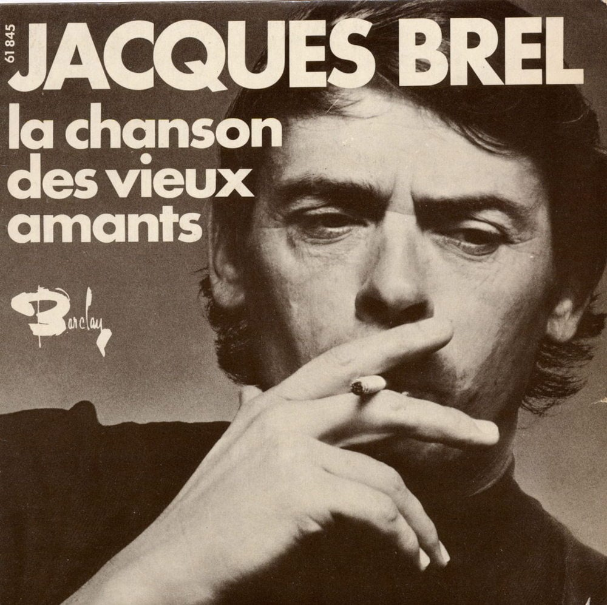

"C'est fini" - by Charles Aznavour is a poignant and melancholic song about the end of a relationship. The lyrics reflect a deep sense of sadness and acceptance, as the narrator acknowledges that love has come to a close. Aznavour's emotive voice conveys the heartache and finality of the situation, as he expresses feelings of loss and regret. The song's beautiful orchestration and heartfelt delivery evoke a sense of nostalgia, illustrating the bittersweet nature of parting ways. "C'est fini" captures the emotional complexity of love's end, with both sorrow and a quiet acceptance of the inevitable.
La chanson des vieux amants - Jacques Brel

"La Chanson des Vieux Amants" - by Jacques Brel is a deeply emotional and poignant song about enduring love through the trials and tribulations of life. The lyrics tell the story of an elderly couple who, despite the ups and downs, conflicts, and hardships they faced over the years, continue to love each other. The song beautifully captures the complexity of long-lasting relationships, blending moments of passion, pain, and forgiveness. Brel’s powerful, raw performance conveys a sense of nostalgia and tenderness, reflecting on the beauty of love that endures through time, despite its inevitable struggles and changes.